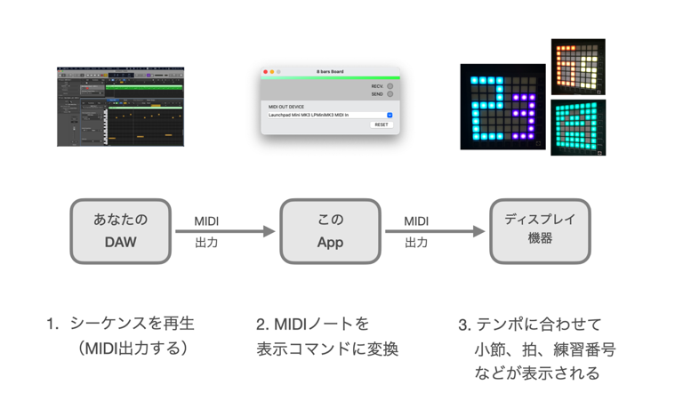
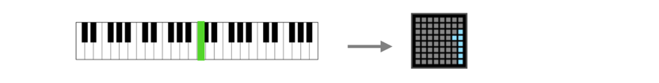
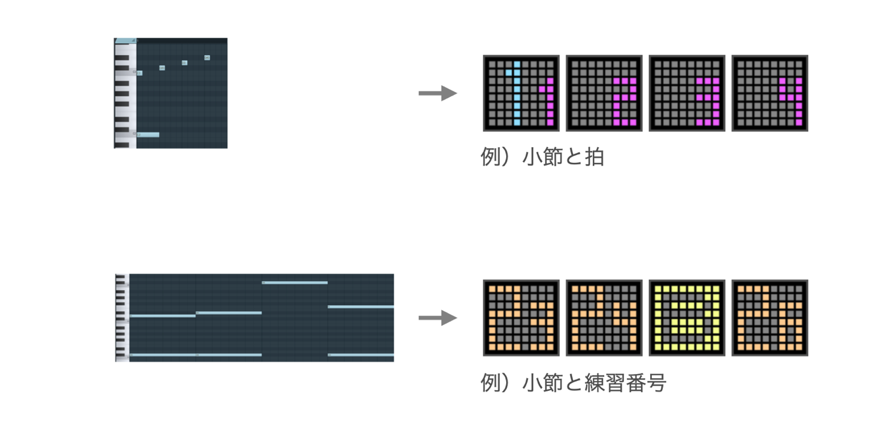
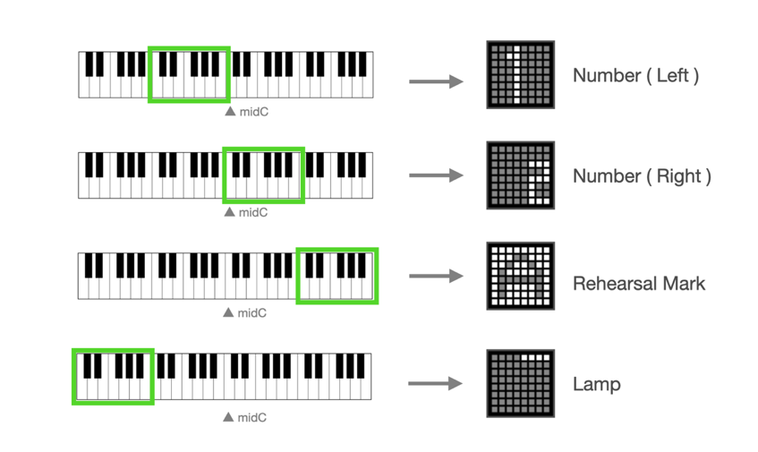

8 bars Board - ユーザーマニュアル Ver1.0
8 bars Boardについて

8 bars Board（エイトバース ボード）は、「弾いてみた動画」などの演奏動画クリエイター向けの、リスナーと小節感覚を共有するためのツールです。
8 bars Boardはコンピュータ上で仮想のMIDIデバイスとして動作します。
DAWと外部ディスプレイ機器と接続することにより、DAWのMIDIシーケンスによる制御で、外部ディスプレイ機器に小節やビートを表示できます。
あなたの音楽のテンポに合わせて小節やビートを表示することにより、曲の小節構造を意識した音楽体験をリスナーと共有しましょう。

※本製品にはDAWおよびディスプレイ機器は含まれません。
動作環境
本ソフトウェアはmacOSで動作するアプリケーションです。
・対応OS： macOS 11(Big Sur), macOS 12(Monterey)
・動作確認はIntel Macでおこなっています。
動作確認済みDAW
現在のところ、以下のDAWで動作確認済みです。
・Logic Pro v10.6.0
・FL Studio 20.9
・Studio One Prime v5.5.0
・Cubase LE 11
※ DAWには、外部デバイスへのMIDI出力機能が備わっている必要があります。
（GarageBandは外部デバイスへのMIDI出力機能がないため対応していません。）
サポートするディスプレイ機器
ディスプレイ機器は、NOVATION社の Launch Pad mini MK3 のみ サポートしています。
使い方
1. DAW、8 bars Board、ディスプレイ機器を立ち上げます。
2. DAWのMIDI出力先として、「8 bars Board - MIDI In」を選択します。
MIDI出力先の設定方法は、各DAWのマニュアルをご参照ください。
3. 8 bars BoardのMIDI出力先として、出力先のディスプレイ機器をリストから選択します。

4. DAW上で音符を再生すると、8 bars Boardを経由して、その音程に基づいた内容がディスプレイ機器に表示されます。

5. DAW上でMIDIシーケンスを打ち込むことで、あなたの音楽のテンポに合わせて、ディスプレイ機器に表示する内容をコントロールすることができます。
MIDIシーケンスの入力例
MIDIシーケンスの入力例です。
特に決まったルールはありませんので、色々なやり方を工夫して試してください。

音程と表示内容のマッピング
DAW上で再生する音符の音程に応じて、ディスプレイ機器に表示される内容が決まります。
以下は、音程の範囲と表示内容のグループとの対応イメージです。

色の変更
ディスプレイ機器に表示する色は、設定画面で変更することが可能です。
（メニューバー > Color > Color Preference より）
色の設定は、表示内容のグループごとにおこなうことができます。

補足
・ディスプレイ機器との接続がうまくいかない場合は、「RESET」ボタンを押してみてください。
・DAWのシーケンス停止時にディスプレイの表示がクリアされない場合は、DAWの設定をチェックし、MIDI同期の信号（MIDIスタート/ストップ/コンティニュー）を送るように変更してみてください。
その他
・アンインストールをする場合は、Applicationフォルダからこのアプリケーションを削除してください。
・8 bars Boardの著作権はyamahito softwareが保有しています。
バージョン履歴
・2022/02/01 Ver1.0 初期リリース
Web: https://yamahito-software.github.io/docs/
Mail: 
Copyright 2022 yamahito software